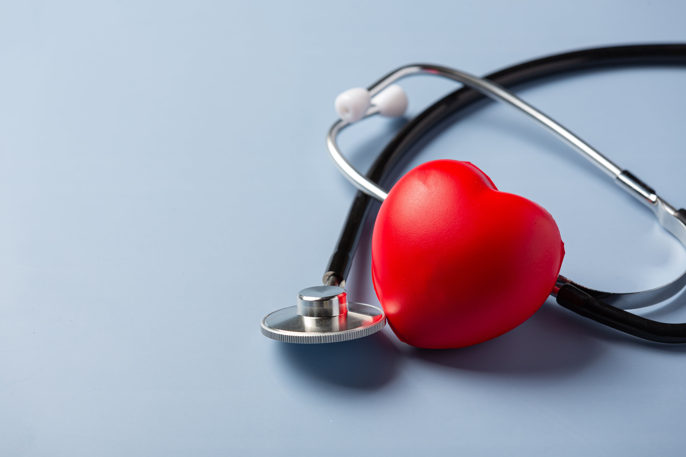
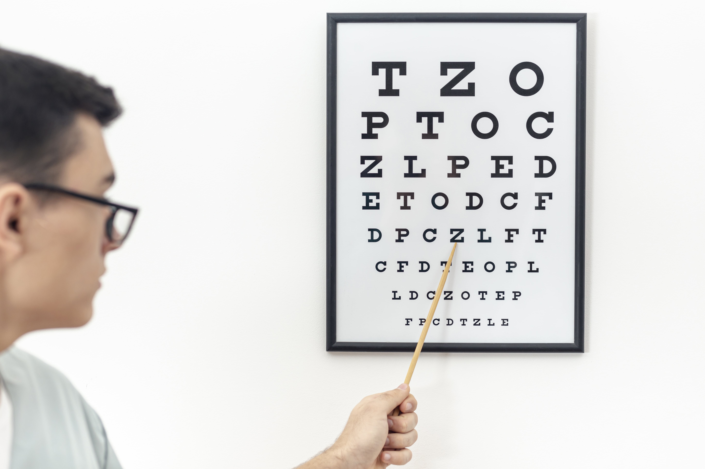
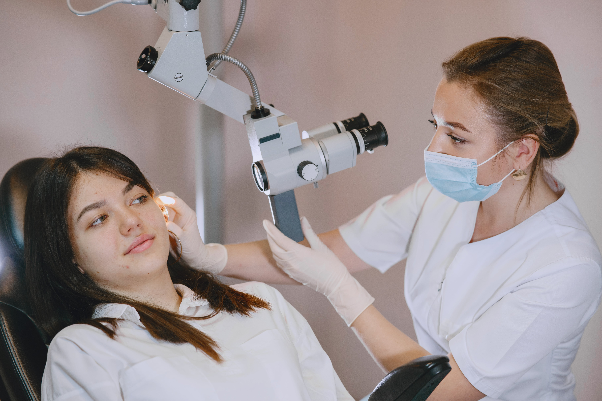
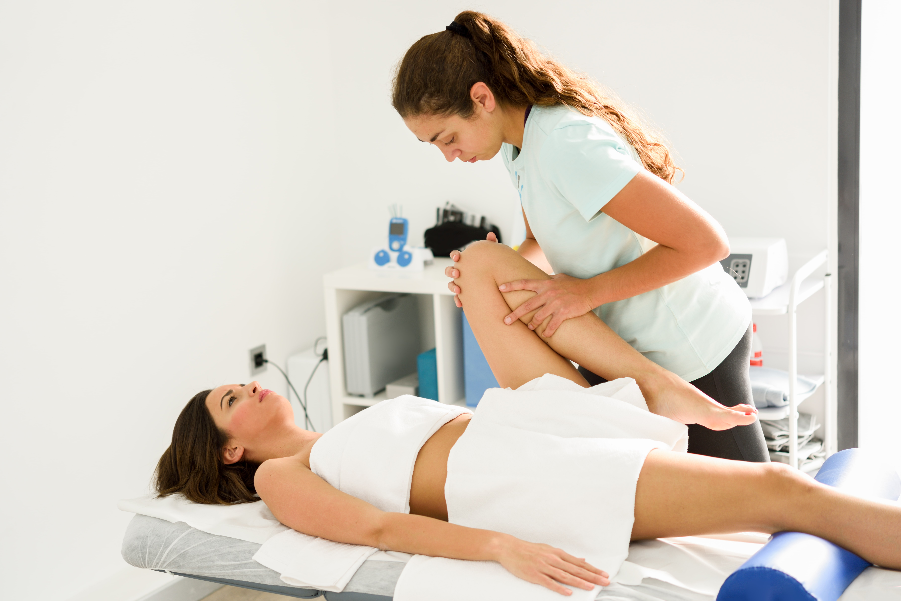
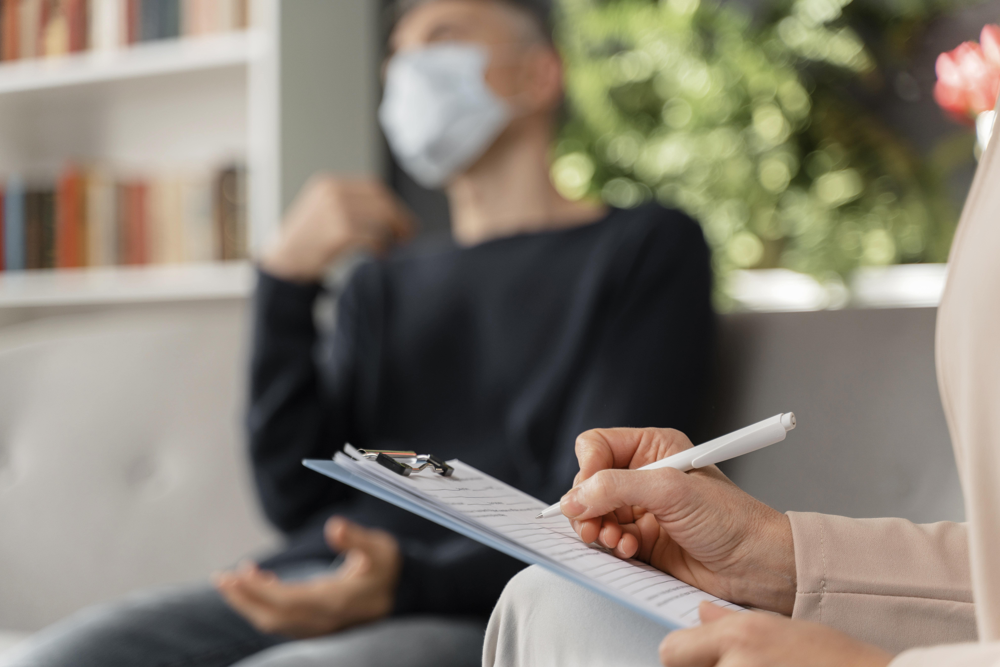
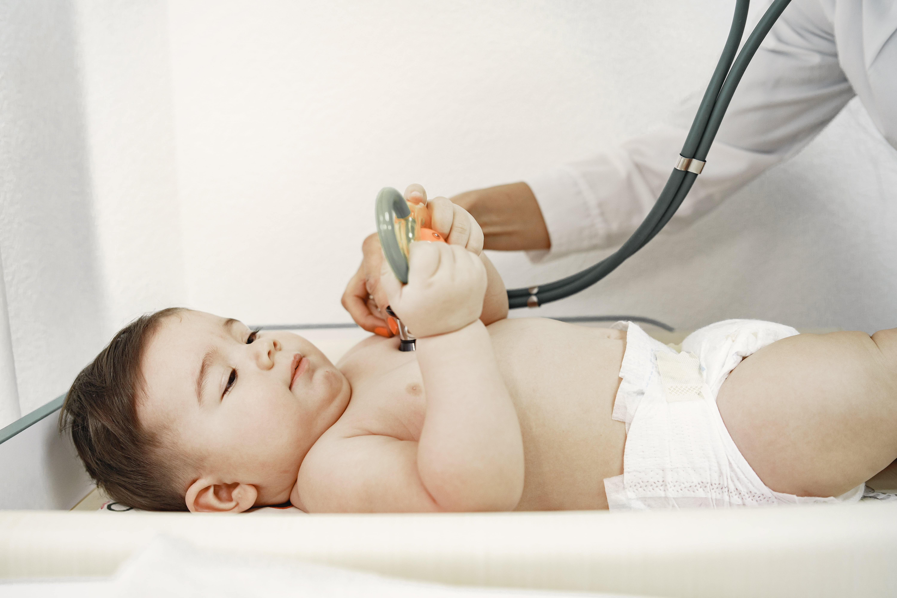

Especialidades
-
Traumatología
Dr. Garavaglia, Maximiliano -

Cardiología
Dr. García, Emilio -
Ginecología, Obstetricia y Patología Mamaria
Dr Zantonini, Juan Pablo -

Oftalmología
Dr Tsuruoka, Ricardo -

Otorrinolaringología
Dr Gorno, Mario -
Nutrición y obesidad
Lic. Zanotti, Lucía -

Kinesiología y Osteopatía
Lic. Affre, Juan -
Neumonología Infantil
Dra. Lopez, Gisela -

Estimulación Temprana y acompañante terapéutico
Lic. Clericó, Vanesa -
Psicología
Lic. Pilar, Nadia -
Psicopedagogía
Dra. Soveron, Nancy -

Pedriatría
Dra. Casha, Jorgelina